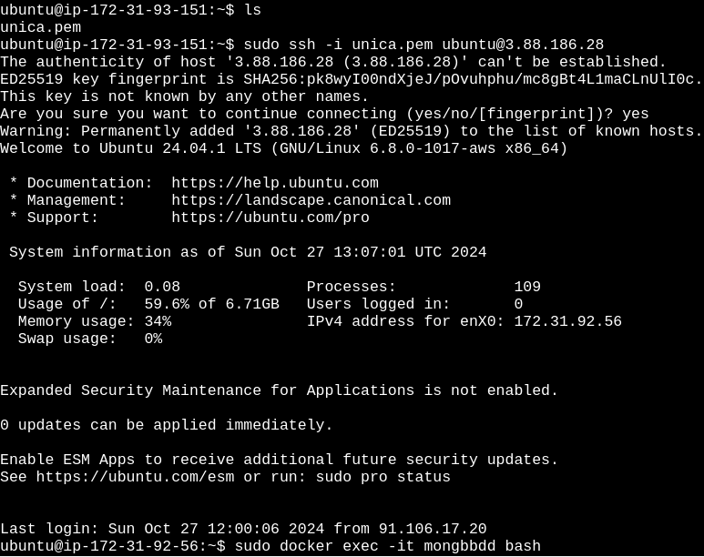

Práctica 2.1: MongoDB (apt)
Instalación y Configuración Avanzada de MongoDB
Configuramos la primera instancia con ubuntu donde lo instalaremos (con apt install) mongoDB


Verificamos la conectividad entre nuestro host y la MV AWS (apt):
ssh -i /ruta/a/clave .pem ubuntu@<ip-pública>

Análisis y selección del SGBD:
Versión más adecuada para mi entorno como estudiante es la MongoDB Community Edition, por las siguientes razones:
- Es totalmente gratuita y de código abierto, lo que la hace ideal para estudiantes y proyectos académicos que no tienen recursos para pagar licencias.
- Es muy estable y recibe actualizaciones y parches de seguridad de forma regular. Esto garantiza que los estudiantes utilicen una versión sólida y segura, perfecta para aprender sin sacrificar la funcionalidad.
- Funciona en múltiples sistemas operativos (Windows, macOS y Linux), lo cual es útil para estudiantes que pueden estar trabajando con diferentes plataformas. La Community Edition también permite el uso de herramientas gratuitas como MongoDB Compass para la administración gráfica.
- Proporciona las funcionalidades clave de MongoDB, como las consultas flexibles de JSON, el soporte para índices y la capacidad de replicación. Esto permite a los estudiantes aprender conceptos fundamentales de bases de datos NoSQL, como la esca-labilidad.
Instalación de MongoDB con apt en Ubuntu
Paso 1: Actualizar los paquetes e importar la clave pública
sudo apt update
sudo apt-get install gnupg curl
Paso 2: Importar la clave GPG de MongoDB
curl -fsSL https://www.mongodb.org/static/pgp/server-8.0.asc | \
sudo gpg -o /usr/share/keyrings/mongodb-server-8.0.gpg \
--dearmor
Paso 3: Creamos el archivo de lista para Ubuntu 24.04 (Noble)
echo "deb [ arch=amd64,arm64 signed-by=/usr/share/keyrings/mongodb-server-8.0.gpg ] https://repo.mongodb.org/apt/ubuntu noble/mongodb-org/8.0 multiverse" | sudo tee /etc/apt/sources.list.d/mongodb-org-8.0.list
Paso 4: Recargamos la BBDD de paquetes
sudo apt-get update
Paso 5: Instalamos la ultima versión estable
sudo apt-get install -y mongodb-org
Paso 6: Iniciar el servicio de MongoDB
sudo systemctl start mongod
Si recibe un error similar al siguiente al iniciar mongod
Failed to start mongod.service: Unit mongod.service not found.
Primero ejecute el siguiente comando:
sudo systemctl daemon-reload
Luego ejecute nuevamente el comando de inicio anterior.
Paso 7: Verificar el estado del servicio
sudo systemctl status mongod
Podemos parar MongoDB:
sudo systemctl stop mongod
Para reiniciar MongDB:
sudo systemctl restart mongod
Paso 8: Habilitar MongoDB para que inicie al arrancar el sistema
sudo systemctl enable mongod
Paso 9: Verificar la conexión a MongoDB
Para confirmar que MongoDB está funcionando correctamente, puedes ejecutar el cliente de MongoDB y ver si se conecta poder comenzar a utilizarlo:
mongosh
Configuración de la conectividad de red en MongoDB (apt) para permitir conexiones remotas
Editamos el archivo de configuración de MongoDB
sudo nano /etc/mongod.conf
Modificamos la opción bindIp
- Buscamos la línea que contiene
bindIp: 127.0.0.1.Esta línea configura MongoDB para que solo escuche en la interfaz de localhost. - Cambia el valor a
0.0.0.0para permitir que MongoDB escuche en todas las interfaces de red:
net:
port: 27017
bindIp: 0.0.0.0
Nota:
bindIp: 0.0.0.0permite que MongoDB acepte conexiones desde cualquier IP.
Reiniciamos MongoDB
sudo systemctl restart mongod
Configurar el Firewall (Opcional)
Si tenemos el firewall habilitado, permitiremos el acceso al puerto 27017 para conexiones remotas:
sudo ufw allow 27017

Verificar la conectividad remota
Desde otra máquina intentaremos conectarnos al servidor de MongoDB usando 'mongosh' con la IP de la máquina donde MongoDB está instalado
mongosh --host <IP del servidor> --port 27017
Si la conexión es correcta, MongoDB está configurado correctamente para conexiones remotas.
En nuestro host
- Comprobaremos en nuestro firewall que tenemos el puerto 27017 habilitado
- Instalaremos mogosdb-mongosh

Gestión de cuentas de usuario y permisos
Creamos un usuario que tenga permiso para conectarse desde la otra máquina
mongosh
test> use admin
db.createUser({
user: "admin_user",
pwd: "securePassword",
roles: [
{ role: "root", db: "admin" }
]
});
Y hay que tener en cuenta de tener de cambiar el valor a 0.0.0.0 para permitir que MongoDB escuche en todas las interfaces de red:
Conectaremos desde otra máquina (host) con el usuario administrador de MongoDB (apt)
mongosh --host <IP_del_servidor> --port 27017 -u "admin_user" -p "securePassword" --authenticationDatabase "admin"

Verificación de la conectividad entre máquinas
- Nos conectamos desde la MV-AWS (apt) a la MV-AWS (docker)
1.-Copiamos desde nuestro host el fichero .pem en la MV-AWS (apt) para poder conectarnos posteriormente a la MV-AWS (docker)
sudo scp -i </path/to/clave.pem> </path/to/clave.pem> ubuntu@<IP del servidor>:./

2.-Nos conectamos desde la MV-AWS (apt) a la MV-AWS (docker) con el fichero .pem
sudo ssh -i <clave.pem> ubuntu@<IP del servidor>

3.-Ejecutamos el contenedor en bash
sudo docker exec -it <nombre-contenedor> bash
4.-Nos conectamos al usuario de la BBDD de mongoDB
mongosh -u <user> -p <password>

- Desde el host a la MV-AWS (docker)
1.-Primero nos conectamos por ssh -i a la MV-AWS (docker)
sudo ssh -i <clave.pem> ubuntu@<ip del servidor>

2.-Ejecutamos el contenedor en bash
sudo docker exec -it <nombre-contenedor> bash
3.-Nos conectamos al usuario de la BBDD de mongoDB
mongosh -u <user> -p <password>